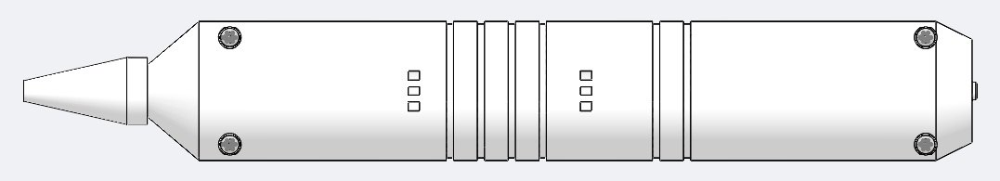
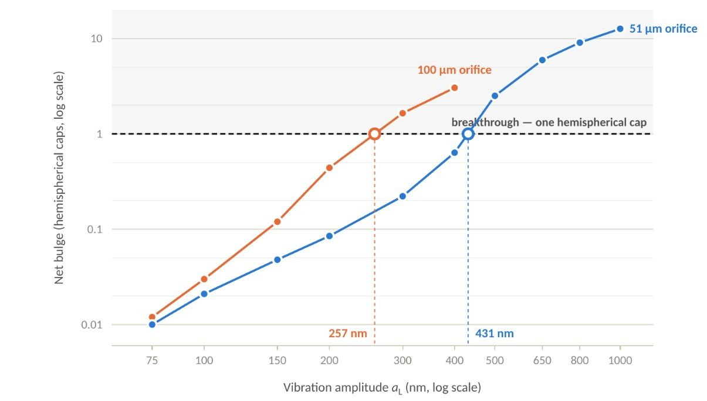

Projects
Each project page shows the outcome first, then the skills used and the details.

Project 1
Handheld Micro Pump Aspirator
Dept. of BioMolecular Sciences · Dr. Gregg Roman
Pen-sized two-pump device for moving fruit flies between vials.

Project 2 · Patent filing in preparation
Syringe Exoskeleton for Ophthalmic Fluid Extraction
Additive Manufacturing & 4D Printing Lab · Dr. Yiwei Han · lead designer
Hand-mounted linkage for one-handed syringe use during eye fluid extraction.
Project 3 · Current work
Copper-Infill PLA Heat Sink
Additive Manufacturing & 4D Printing Lab · Dr. Yiwei Han
3D-printed heat sink tested against regular PLA, also a shape-memory part.

Project 4 · Design proposal
Automated Print-to-Station Sample Cell
Pharmaceutical Engineering and 3D Printing Lab · Dr. Mo Maniruzzaman
Robot cell that moves printed parts from a 3D printer to 4 stations.

Project 5 · Current work · simulation
Liquid-Metal Printhead CFD
Additive Manufacturing & 4D Printing Lab · Dr. Yiwei Han
CFD of an NSF-funded printhead: nozzle vibration and when drops form.